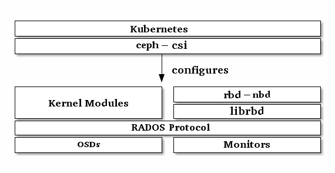

块设备与 Kubernetes¶
You may use Ceph Block Device images with Kubernetes v1.13 and later through ceph-csi, which dynamically provisions RBD images to back Kubernetes volumes and maps these RBD images as block devices (optionally mounting a file system contained within the image) on worker nodes running pods that reference an RBD-backed volume. Ceph stripes block device images as objects across the cluster, which means that large Ceph Block Device images have better performance than a standalone server!
To use Ceph Block Devices with Kubernetes v1.13 and higher, you must install
and configure ceph-csi within your Kubernetes environment. The following
diagram depicts the Kubernetes/Ceph technology stack.

Important
ceph-csi uses the RBD kernel modules by default which may not support all
Ceph CRUSH tunables or RBD image features.
Create a Pool¶
By default, Ceph block devices use the rbd pool. Create a pool for
Kubernetes volume storage. Ensure your Ceph cluster is running, then create
the pool.
$ ceph osd pool create kubernetes
See Create a Pool for details on specifying the number of placement groups for your pools, and Placement Groups for details on the number of placement groups you should set for your pools.
A newly created pool must be initialized prior to use. Use the rbd tool
to initialize the pool:
$ rbd pool init kubernetes
Configure ceph-csi¶
Setup Ceph Client Authentication¶
Create a new user for Kubernetes and ceph-csi. Execute the following and record the generated key:
$ ceph auth get-or-create client.kubernetes mon 'profile rbd' osd 'profile rbd pool=kubernetes' mgr 'profile rbd pool=kubernetes'
[client.kubernetes]
key = AQD9o0Fd6hQRChAAt7fMaSZXduT3NWEqylNpmg==
Generate ceph-csi ConfigMap¶
The ceph-csi requires a ConfigMap object stored in Kubernetes to define the the Ceph monitor addresses for the Ceph cluster. Collect both the Ceph cluster unique fsid and the monitor addresses:
$ ceph mon dump
<...>
fsid b9127830-b0cc-4e34-aa47-9d1a2e9949a8
<...>
0: [v2:192.168.1.1:3300/0,v1:192.168.1.1:6789/0] mon.a
1: [v2:192.168.1.2:3300/0,v1:192.168.1.2:6789/0] mon.b
2: [v2:192.168.1.3:3300/0,v1:192.168.1.3:6789/0] mon.c
Note
ceph-csi currently only supports the legacy V1 protocol.
Generate a csi-config-map.yaml file similar to the example below, substituting the fsid for “clusterID”, and the monitor addresses for “monitors”:
$ cat <<EOF > csi-config-map.yaml
---
apiVersion: v1
kind: ConfigMap
data:
config.json: |-
[
{
"clusterID": "b9127830-b0cc-4e34-aa47-9d1a2e9949a8",
"monitors": [
"192.168.1.1:6789",
"192.168.1.2:6789",
"192.168.1.3:6789"
]
}
]
metadata:
name: ceph-csi-config
EOF
Once generated, store the new ConfigMap object in Kubernetes:
$ kubectl apply -f csi-config-map.yaml
Generate ceph-csi cephx Secret¶
ceph-csi requires the cephx credentials for communicating with the Ceph cluster. Generate a csi-rbd-secret.yaml file similar to the example below, using the newly created Kubernetes user id and cephx key:
$ cat <<EOF > csi-rbd-secret.yaml
---
apiVersion: v1
kind: Secret
metadata:
name: csi-rbd-secret
namespace: default
stringData:
userID: kubernetes
userKey: AQD9o0Fd6hQRChAAt7fMaSZXduT3NWEqylNpmg==
EOF
Once generated, store the new Secret object in Kubernetes:
$ kubectl apply -f csi-rbd-secret.yaml
Configure ceph-csi Plugins¶
Create the required ServiceAccount and RBAC ClusterRole/ClusterRoleBinding Kubernetes objects. These objects do not necessarily need to be customized for your Kubernetes environment and therefore can be used as-is from the ceph-csi deployment YAMLs:
$ kubectl apply -f https://raw.githubusercontent.com/ceph/ceph-csi/master/deploy/rbd/kubernetes/csi-provisioner-rbac.yaml
$ kubectl apply -f https://raw.githubusercontent.com/ceph/ceph-csi/master/deploy/rbd/kubernetes/csi-nodeplugin-rbac.yaml
Finally, create the ceph-csi provisioner and node plugins. With the possible exception of the ceph-csi container release version, these objects do not necessarily need to be customized for your Kubernetes environment and therefore can be used as-is from the ceph-csi deployment YAMLs:
$ wget https://raw.githubusercontent.com/ceph/ceph-csi/master/deploy/rbd/kubernetes/csi-rbdplugin-provisioner.yaml
$ kubectl apply -f csi-rbdplugin-provisioner.yaml
$ wget https://raw.githubusercontent.com/ceph/ceph-csi/master/deploy/rbd/kubernetes/csi-rbdplugin.yaml
$ kubectl apply -f csi-rbdplugin.yaml
Important
The provisioner and node plugin YAMLs will, by default, pull the development release of the ceph-csi container (quay.io/cephcsi/cephcsi:canary). The YAMLs should be updated to use a release version container for production workloads.
Using Ceph Block Devices¶
Create a StorageClass¶
The Kubernetes StorageClass defines a class of storage. Multiple StorageClass objects can be created to map to different quality-of-service levels (i.e. NVMe vs HDD-based pools) and features.
For example, to create a ceph-csi StorageClass that maps to the kubernetes pool created above, the following YAML file can be used after ensuring that the “clusterID” property matches your Ceph cluster’s fsid:
$ cat <<EOF > csi-rbd-sc.yaml
---
apiVersion: storage.k8s.io/v1
kind: StorageClass
metadata:
name: csi-rbd-sc
provisioner: rbd.csi.ceph.com
parameters:
clusterID: b9127830-b0cc-4e34-aa47-9d1a2e9949a8
pool: kubernetes
csi.storage.k8s.io/provisioner-secret-name: csi-rbd-secret
csi.storage.k8s.io/provisioner-secret-namespace: default
csi.storage.k8s.io/node-stage-secret-name: csi-rbd-secret
csi.storage.k8s.io/node-stage-secret-namespace: default
reclaimPolicy: Delete
mountOptions:
- discard
EOF
$ kubectl apply -f csi-rbd-sc.yaml
Create a PersistentVolumeClaim¶
A PersistentVolumeClaim is a request for abstract storage resources by a user. The PersistentVolumeClaim would then be associated to a Pod resource to provision a PersistentVolume, which would be backed by a Ceph block image. An optional volumeMode can be included to select between a mounted file system (default) or raw block device-based volume.
Using ceph-csi, specifying Filesystem for volumeMode can support both ReadWriteOnce and ReadOnlyMany accessMode claims, and specifying Block for volumeMode can support ReadWriteOnce, ReadWriteMany, and ReadOnlyMany accessMode claims.
For example, to create a block-based PersistentVolumeClaim that utilizes the ceph-csi-based StorageClass created above, the following YAML can be used to request raw block storage from the csi-rbd-sc StorageClass:
$ cat <<EOF > raw-block-pvc.yaml
---
apiVersion: v1
kind: PersistentVolumeClaim
metadata:
name: raw-block-pvc
spec:
accessModes:
- ReadWriteOnce
volumeMode: Block
resources:
requests:
storage: 1Gi
storageClassName: csi-rbd-sc
EOF
$ kubectl apply -f raw-block-pvc.yaml
The following demonstrates and example of binding the above PersistentVolumeClaim to a Pod resource as a raw block device:
$ cat <<EOF > raw-block-pod.yaml
---
apiVersion: v1
kind: Pod
metadata:
name: pod-with-raw-block-volume
spec:
containers:
- name: fc-container
image: fedora:26
command: ["/bin/sh", "-c"]
args: ["tail -f /dev/null"]
volumeDevices:
- name: data
devicePath: /dev/xvda
volumes:
- name: data
persistentVolumeClaim:
claimName: raw-block-pvc
EOF
$ kubectl apply -f raw-block-pod.yaml
To create a file-system-based PersistentVolumeClaim that utilizes the ceph-csi-based StorageClass created above, the following YAML can be used to request a mounted file system (backed by an RBD image) from the csi-rbd-sc StorageClass:
$ cat <<EOF > pvc.yaml
---
apiVersion: v1
kind: PersistentVolumeClaim
metadata:
name: rbd-pvc
spec:
accessModes:
- ReadWriteOnce
volumeMode: Filesystem
resources:
requests:
storage: 1Gi
storageClassName: csi-rbd-sc
EOF
$ kubectl apply -f pvc.yaml
The following demonstrates and example of binding the above PersistentVolumeClaim to a Pod resource as a mounted file system:
$ cat <<EOF > pod.yaml
---
apiVersion: v1
kind: Pod
metadata:
name: csi-rbd-demo-pod
spec:
containers:
- name: web-server
image: nginx
volumeMounts:
- name: mypvc
mountPath: /var/lib/www/html
volumes:
- name: mypvc
persistentVolumeClaim:
claimName: rbd-pvc
readOnly: false
EOF
$ kubectl apply -f pod.yaml